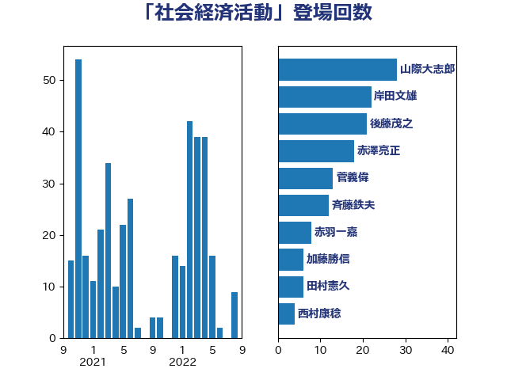

単語「社会経済活動」

| 山際大志郎 | 自由民主党 | 28 回 |
| 岸田文雄 | 自由民主党 | 22 回 |
| 後藤茂之 | 自由民主党 | 21 回 |
| 赤澤亮正 | 自由民主党 | 18 回 |
| 菅義偉 | 自由民主党 | 13 回 |
| 斉藤鉄夫 | 公明党 | 12 回 |
| 赤羽一嘉 | 公明党 | 8 回 |
| 加藤勝信 | 自由民主党 | 6 回 |
| 田村憲久 | 自由民主党 | 6 回 |
| 西村康稔 | 自由民主党 | 4 回 |
| 野上浩太郎 | 自由民主党 | 4 回 |
| 鈴木俊一 | 自由民主党 | 4 回 |
| 上川陽子 | 自由民主党 | 3 回 |
| 井坂信彦 | 立憲民主党 | 3 回 |
| 和田義明 | 自由民主党 | 3 回 |
| 安江伸夫 | 公明党 | 3 回 |
| 枝野幸男 | 立憲民主党 | 3 回 |
| 武田良太 | 自由民主党 | 3 回 |
| 河野太郎 | 自由民主党 | 3 回 |
| 浅田均 | 日本維新の会 | 3 回 |
| 深澤陽一 | 自由民主党 | 3 回 |
| 石井啓一 | 公明党 | 3 回 |
| 石川博崇 | 公明党 | 3 回 |
| 石田昌宏 | 自由民主党 | 3 回 |
| 萩生田光一 | 自由民主党 | 3 回 |
| 谷川とむ | 自由民主党 | 3 回 |
| 金子恭之 | 自由民主党 | 3 回 |
| 高野光二郎 | 自由民主党 | 3 回 |
| 麻生太郎 | 自由民主党 | 3 回 |
| 中山展宏 | 自由民主党 | 2 回 |
| 今井絵理子 | 自由民主党 | 2 回 |
| 佐藤啓 | 自由民主党 | 2 回 |
| 倉林明子 | 日本共産党 | 2 回 |
| 山口那津男 | 公明党 | 2 回 |
| 後藤祐一 | 立憲民主党 | 2 回 |
| 日下正喜 | 公明党 | 2 回 |
| 朝日健太郎 | 自由民主党 | 2 回 |
| 松川るい | 自由民主党 | 2 回 |
| 柳本顕 | 自由民主党 | 2 回 |
| 梶山弘志 | 自由民主党 | 2 回 |
| 森屋隆 | 立憲民主党 | 2 回 |
| 渡辺猛之 | 自由民主党 | 2 回 |
| 熊田裕通 | 自由民主党 | 2 回 |
| 神谷裕 | 立憲民主党 | 2 回 |
| 藤田文武 | 日本維新の会 | 2 回 |
| 野田聖子 | 自由民主党 | 2 回 |
| 鳩山二郎 | 自由民主党 | 2 回 |
| あかま二郎 | 自由民主党 | 1 回 |
| 三浦信祐 | 公明党 | 1 回 |
| 世耕弘成 | 自由民主党 | 1 回 |
| 中司宏 | 日本維新の会 | 1 回 |
| 中西健治 | 自由民主党 | 1 回 |
| 井上英孝 | 日本維新の会 | 1 回 |
| 井野俊郎 | 自由民主党 | 1 回 |
| 今枝宗一郎 | 自由民主党 | 1 回 |
| 前原誠司 | 国民民主党 | 1 回 |
| 加田裕之 | 自由民主党 | 1 回 |
| 北側一雄 | 公明党 | 1 回 |
| 古川康 | 自由民主党 | 1 回 |
| 吉川沙織 | 立憲民主党 | 1 回 |
| 城井崇 | 立憲民主党 | 1 回 |
| 塩田博昭 | 公明党 | 1 回 |
| 大西健介 | 立憲民主党 | 1 回 |
| 宮路拓馬 | 自由民主党 | 1 回 |
| 小林鷹之 | 自由民主党 | 1 回 |
| 小里泰弘 | 自由民主党 | 1 回 |
| 小野泰輔 | 日本維新の会 | 1 回 |
| 山崎正恭 | 公明党 | 1 回 |
| 山本博司 | 公明党 | 1 回 |
| 平井卓也 | 自由民主党 | 1 回 |
| 平木大作 | 公明党 | 1 回 |
| 庄子賢一 | 公明党 | 1 回 |
| 木原誠二 | 自由民主党 | 1 回 |
| 杉久武 | 公明党 | 1 回 |
| 松本洋平 | 自由民主党 | 1 回 |
| 柳ヶ瀬裕文 | 日本維新の会 | 1 回 |
| 柴田巧 | 日本維新の会 | 1 回 |
| 横沢高徳 | 立憲民主党 | 1 回 |
| 橋本聖子 | 無所属 | 1 回 |
| 池下卓 | 日本維新の会 | 1 回 |
| 泉健太 | 立憲民主党 | 1 回 |
| 浜田聡 | NHK党 | 1 回 |
| 浜野喜史 | 国民民主党 | 1 回 |
| 滝沢求 | 自由民主党 | 1 回 |
| 牧山ひろえ | 立憲民主党 | 1 回 |
| 田中健 | 国民民主党 | 1 回 |
| 田村まみ | 国民民主党 | 1 回 |
| 盛山正仁 | 自由民主党 | 1 回 |
| 石井浩郎 | 自由民主党 | 1 回 |
| 石井苗子 | 日本維新の会 | 1 回 |
| 福田昭夫 | 立憲民主党 | 1 回 |
| 稲津久 | 公明党 | 1 回 |
| 竹内譲 | 公明党 | 1 回 |
| 舞立昇治 | 自由民主党 | 1 回 |
| 西村智奈美 | 立憲民主党 | 1 回 |
| 近藤和也 | 立憲民主党 | 1 回 |
| 遠藤敬 | 日本維新の会 | 1 回 |
| 階猛 | 立憲民主党 | 1 回 |
| 青木愛 | 立憲民主党 | 1 回 |
| 馬場伸幸 | 日本維新の会 | 1 回 |
| 高橋はるみ | 自由民主党 | 1 回 |